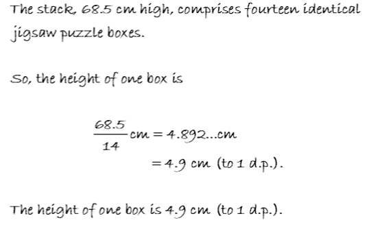
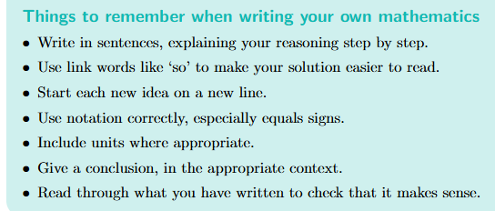

TMA01
Question 1
Consider the following TMA question
TMA Question: stack of fourteen identical jigsaw puzzle boxes measures 68.5 cm high. Calculate the
height of one jigsaw box. Give your answer in centimetres, correct to 1 decimal place.
Here is a student's first attempt at a solution, with the correct numerical results:
First Solution:68.5 = 68.5/14 = 4.9 = 1 box
Later the student wrote a solution to be submitted for the TMA:
Second Solution:

With reference to good mathematical communication (GMC), give 5 reasons why the second solution is better than
the first.

Answer:
- The student is re-writing the maths question within their solution, including link words like
"So"
- Each step of the solution is on a new line and clearly laid out
- The student has included units within the steps and in their answer
- The student has used correct notation
- the ellipsis to show the original calculation resulted in numbers that have
been omitted, but have given enough numbers after the decimal point to show how they had rounded
it to 1
decimal point
- The student has clearly indicated that they have rounded the answer to one decimal point (1
d.p)
- The student used the equal signs correctly
- The student wrote the conclusion with the solution in a clear and concise manner. stating correct units
and notation